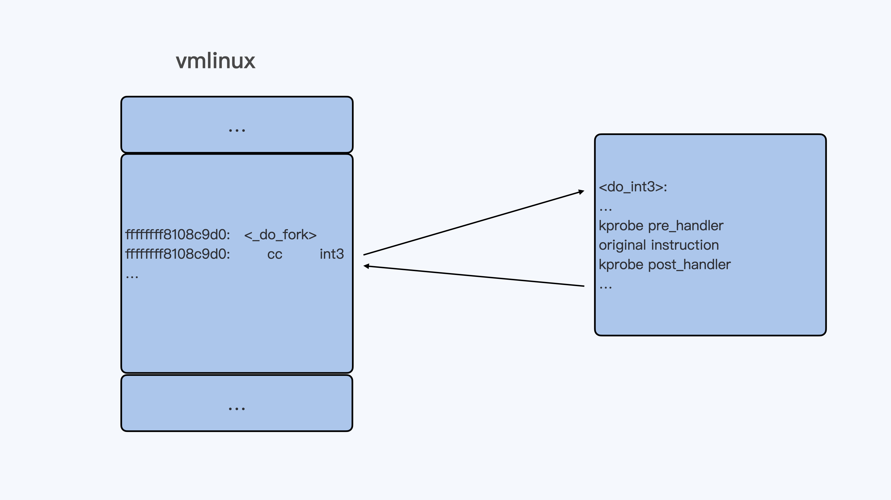
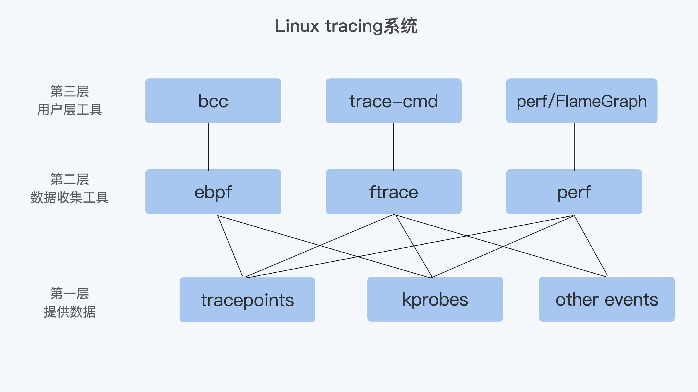

- 00 开篇词 一个态度两个步骤，成为容器实战高手.md.html
- 01 认识容器：容器的基本操作和实现原理.md.html
- 02 理解进程（1）：为什么我在容器中不能kill 1号进程？.md.html
- 03 理解进程（2）：为什么我的容器里有这么多僵尸进程？.md.html
- 04 理解进程（3）：为什么我在容器中的进程被强制杀死了？.md.html
- 05 容器CPU（1）：怎么限制容器的CPU使用？.md.html
- 06 容器CPU（2）：如何正确地拿到容器CPU的开销？.md.html
- 07 Load Average：加了CPU Cgroup限制，为什么我的容器还是很慢？.md.html
- 08 容器内存：我的容器为什么被杀了？.md.html
- 09 Page Cache：为什么我的容器内存使用量总是在临界点.md.html
- 10 Swap：容器可以使用Swap空间吗？.md.html
- 11 容器文件系统：我在容器中读写文件怎么变慢了.md.html
- 12 容器文件Quota：容器为什么把宿主机的磁盘写满了？.md.html
- 13 容器磁盘限速：我的容器里磁盘读写为什么不稳定.md.html
- 14 容器中的内存与IO：容器写文件的延时为什么波动很大？.md.html
- 15 容器网络：我修改了procsysnet下的参数，为什么在容器中不起效？.md.html
- 16 容器网络配置（1）：容器网络不通了要怎么调试.md.html
- 17 容器网络配置（2）：容器网络延时要比宿主机上的高吗.md.html
- 18 容器网络配置（3）：容器中的网络乱序包怎么这么高？.md.html
- 19 容器安全（1）：我的容器真的需要privileged权限吗.md.html
- 20 容器安全（2）：在容器中，我不以root用户来运行程序可以吗？.md.html
- 加餐01 案例分析：怎么解决海量IPVS规则带来的网络延时抖动问题？.md.html
- 加餐02 理解perf：怎么用perf聚焦热点函数？.md.html
- 加餐03 理解ftrace（1）：怎么应用ftrace查看长延时内核函数？.md.html
- 加餐04 理解ftrace（2）：怎么理解ftrace背后的技术tracepoint和kprobe？.md.html
- 加餐05 eBPF：怎么更加深入地查看内核中的函数？.md.html
- 加餐06 BCC：入门eBPF的前端工具.md.html
- 加餐福利 课后思考题答案合集.md.html
- 结束语 跳出舒适区，突破思考的惰性.md.html
加餐04 理解ftrace（2）：怎么理解ftrace背后的技术tracepoint和kprobe？
你好，我是程远。
前面两讲，我们分别学习了 perf 和 ftrace 这两个最重要 Linux tracing 工具。在学习过程中，我们把重点放在了这两个工具最基本的功能点上。
不过你学习完这些之后，我们内核调试版图的知识点还没有全部点亮。
如果你再去查看一些 perf、ftrace 或者其他 Linux tracing 相关资料，你可能会常常看到两个单词，“tracepoint”和“kprobe”。你有没有好奇过，这两个名词到底是什么意思，它们和 perf、ftrace 这些工具又是什么关系呢？
这一讲，我们就来学习这两个在 Linux tracing 系统中非常重要的概念，它们就是 tracepoint 和 kprobe。
tracepoint 和 kprobe 的应用举例
如果你深入地去看一些 perf 或者 ftrace 的功能，这时候你会发现它们都有跟 tracepoint、kprobe 相关的命令。我们先来看几个例子，通过这几个例子，你可以大概先了解一下 tracepoint 和 kprobe 的应用，这样我们后面做详细的原理介绍时，你也会更容易理解。
首先看看 tracepoint，tracepoint 其实就是在 Linux 内核的一些关键函数中埋下的 hook 点，这样在 tracing 的时候，我们就可以在这些固定的点上挂载调试的函数，然后查看内核的信息。
我们通过下面的这个 perf list 命令，就可以看到所有的 tracepoints：
# perf list | grep Tracepoint
alarmtimer:alarmtimer_cancel [Tracepoint event]
alarmtimer:alarmtimer_fired [Tracepoint event]
alarmtimer:alarmtimer_start [Tracepoint event]
alarmtimer:alarmtimer_suspend [Tracepoint event]
block:block_bio_backmerge [Tracepoint event]
block:block_bio_bounce [Tracepoint event]
block:block_bio_complete [Tracepoint event]
block:block_bio_frontmerge [Tracepoint event]
block:block_bio_queue [Tracepoint event]
…
至于 ftrace，你在 tracefs 文件系统中，也会看到一样的 tracepoints：
# find /sys/kernel/debug/tracing/events -type d | sort
/sys/kernel/debug/tracing/events
/sys/kernel/debug/tracing/events/alarmtimer
/sys/kernel/debug/tracing/events/alarmtimer/alarmtimer_cancel
/sys/kernel/debug/tracing/events/alarmtimer/alarmtimer_fired
/sys/kernel/debug/tracing/events/alarmtimer/alarmtimer_start
/sys/kernel/debug/tracing/events/alarmtimer/alarmtimer_suspend
/sys/kernel/debug/tracing/events/block
/sys/kernel/debug/tracing/events/block/block_bio_backmerge
/sys/kernel/debug/tracing/events/block/block_bio_bounce
/sys/kernel/debug/tracing/events/block/block_bio_complete
/sys/kernel/debug/tracing/events/block/block_bio_frontmerge
…
为了让你更好理解，我们就拿“do_sys_open”这个 tracepoint 做例子。在内核函数 do_sys_open() 中，有一个 trace_do_sys_open() 调用，其实它这就是一个 tracepoint：
long do_sys_open(int dfd, const char __user *filename, int flags, umode_t mode)
{
struct open_flags op;
int fd = build_open_flags(flags, mode, &op);
struct filename *tmp;
if (fd)
return fd;
tmp = getname(filename);
if (IS_ERR(tmp))
return PTR_ERR(tmp);
fd = get_unused_fd_flags(flags);
if (fd >= 0) {
struct file *f = do_filp_open(dfd, tmp, &op);
if (IS_ERR(f)) {
put_unused_fd(fd);
fd = PTR_ERR(f);
} else {
fsnotify_open(f);
fd_install(fd, f);
trace_do_sys_open(tmp->name, flags, mode);
}
}
putname(tmp);
return fd;
}
接下来，我们可以通过 perf 命令，利用 tracepoint 来查看一些内核函数发生的频率，比如在节点上，统计 10 秒钟内调用 do_sys_open 成功的次数，也就是打开文件的次数。
# # perf stat -a -e fs:do_sys_open -- sleep 10
Performance counter stats for 'system wide':
7 fs:do_sys_open
10.001954100 seconds time elapsed
同时，如果我们把 tracefs 中 do_sys_open 的 tracepoint 打开，那么在 ftrace 的 trace 输出里，就可以看到具体 do_sys_open 每次调用成功时，打开的文件名、文件属性、对应的进程等信息。
# pwd
/sys/kernel/debug/tracing
# echo 1 > events/fs/do_sys_open/enable
# cat trace
# tracer: nop
#
# _-----=> irqs-off
# / _----=> need-resched
# | / _---=> hardirq/softirq
# || / _--=> preempt-depth
# ||| / delay
# TASK-PID CPU# |||| TIMESTAMP FUNCTION
# | | | |||| | |
systemd-1 [011] .... 17133447.451839: do_sys_open: "/proc/22597/cgroup" 88000 666
bash-4118 [009] .... 17133450.076026: do_sys_open: "/" 98800 0
salt-minion-7101 [010] .... 17133450.478659: do_sys_open: "/etc/hosts" 88000 666
systemd-journal-2199 [011] .... 17133450.487930: do_sys_open: "/proc/6989/cgroup" 88000 666
systemd-journal-2199 [011] .... 17133450.488019: do_sys_open: "/var/log/journal/d4f76e4bf5414ac78e1c534ebe5d0a72" 98800 0
systemd-journal-2199 [011] .... 17133450.488080: do_sys_open: "/proc/6989/comm" 88000 666
systemd-journal-2199 [011] .... 17133450.488114: do_sys_open: "/proc/6989/cmdline" 88000 666
systemd-journal-2199 [011] .... 17133450.488143: do_sys_open: "/proc/6989/status" 88000 666
systemd-journal-2199 [011] .... 17133450.488185: do_sys_open: "/proc/6989/sessionid" 88000 666
…
请注意，Tracepoint 是在内核中固定的 hook 点，并不是在所有的函数中都有 tracepoint。
比如在上面的例子里，我们看到 do_sys_open() 调用到了 do_filp_open()，但是 do_filp_open() 函数里是没有 tracepoint 的。那如果想看到 do_filp_open() 函数被调用的频率，或者 do_filp_open() 在被调用时传入参数的情况，我们又该怎么办呢？
这时候，我们就需要用到 kprobe 了。kprobe 可以动态地在所有的内核函数（除了 inline 函数）上挂载 probe 函数。我们还是结合例子做理解，先看看 perf 和 ftraces 是怎么利用 kprobe 来做调试的。
比如对于 do_filp_open() 函数，我们可以通过perf probe添加一下，然后用perf stat 看看在 10 秒钟的时间里，这个函数被调用到的次数。
# perf probe --add do_filp_open
# perf stat -a -e probe:do_filp_open -- sleep 10
Performance counter stats for 'system wide':
11 probe:do_filp_open
10.001489223 seconds time elapsed
我们也可以通过 ftrace 的 tracefs 给 do_filp_open() 添加一个 kprobe event，这样就能查看 do_filp_open() 每次被调用的时候，前面两个参数的值了。
这里我要给你说明一下，在写入 kprobe_event 的时候，对于参数的定义我们用到了“%di”和“%si”。这是 x86 处理器里的寄存器，根据 x86 的Application Binary Interface 的文档，在函数被调用的时候，%di 存放了第一个参数，%si 存放的是第二个参数。
# echo 'p:kprobes/myprobe do_filp_open dfd=+0(%di):u32 pathname=+0(+0(%si)):string' > /sys/kernel/debug/tracing/kprobe_event
完成上面的写入之后，我们再 enable 这个新建的 kprobe event。这样在 trace 中，我们就可以看到每次 do_filp_open（）被调用时前两个参数的值了。
# echo 1 > /sys/kernel/debug/tracing/events/kprobes/myprobe/enable
# cat /sys/kernel/debug/tracing/trace
…
irqbalance-1328 [005] .... 2773211.189573: myprobe: (do_filp_open+0x0/0x100) dfd=4294967295 pathname="/proc/interrupts"
irqbalance-1328 [005] .... 2773211.189740: myprobe: (do_filp_open+0x0/0x100) dfd=638399 pathname="/proc/stat"
irqbalance-1328 [005] .... 2773211.189800: myprobe: (do_filp_open+0x0/0x100) dfd=638399 pathname="/proc/irq/8/smp_affinity"
bash-15864 [004] .... 2773211.219048: myprobe: (do_filp_open+0x0/0x100) dfd=14819 pathname="/sys/kernel/debug/tracing/"
bash-15864 [004] .... 2773211.891472: myprobe: (do_filp_open+0x0/0x100) dfd=6859 pathname="/sys/kernel/debug/tracing/"
bash-15864 [004] .... 2773212.036449: myprobe: (do_filp_open+0x0/0x100) dfd=4294967295 pathname="/sys/kernel/debug/tracing/"
bash-15864 [004] .... 2773212.197525: myprobe: (do_filp_open+0x0/0x100) dfd=638259 pathname="/sys/kernel/debug/tracing/
…
好了，我们通过 perf 和 ftrace 的几个例子，简单了解了 tracepoint 和 kprobe 是怎么用的。那下面我们再来看看它们的实现原理。
Tracepoint
刚才，我们已经看到了内核函数 do_sys_open() 里调用了 trace_do_sys_open() 这个 treacepoint，那这个 tracepoint 是怎么实现的呢？我们还要再仔细研究一下。
如果你在内核代码中，直接搜索“trace_do_sys_open”字符串的话，并不能找到这个函数的直接定义。这是因为在 Linux 中，每一个 tracepoint 的相关数据结构和函数，主要是通过"DEFINE_TRACE"和"DECLARE_TRACE"这两个宏来定义的。
完整的“DEFINE_TRACE”和“DECLARE_TRACE”宏里，给每个 tracepoint 都定义了一组函数。在这里，我会选择最主要的几个函数，把定义一个 tracepoint 的过程给你解释一下。
首先，我们来看“trace_##name”这个函数（提示一下，这里的“##”是 C 语言的预编译宏，表示把两个字符串连接起来）。
对于每个命名为“name”的 tracepoint，这个宏都会帮助它定一个函数。这个函数的格式是这样的，以“trace_”开头，再加上 tracepoint 的名字。
我们举个例子吧。比如说，对于“do_sys_open”这个 tracepoint，它生成的函数名就是 trace_do_sys_open。而这个函数会被内核函数 do_sys_open() 调用，从而实现了一个内核的 tracepoint。
static inline void trace_##name(proto) \
{ \
if (static_key_false(&__tracepoint_##name.key)) \
__DO_TRACE(&__tracepoint_##name, \
TP_PROTO(data_proto), \
TP_ARGS(data_args), \
TP_CONDITION(cond), 0); \
if (IS_ENABLED(CONFIG_LOCKDEP) && (cond)) { \
rcu_read_lock_sched_notrace(); \
rcu_dereference_sched(__tracepoint_##name.funcs);\
rcu_read_unlock_sched_notrace(); \
} \
}
在这个 tracepoint 函数里，主要的功能是这样实现的，通过 __DO_TRACE 来调用所有注册在这个 tracepoint 上的 probe 函数。
#define __DO_TRACE(tp, proto, args, cond, rcuidle) \
…
it_func_ptr = rcu_dereference_raw((tp)->funcs); \
\
if (it_func_ptr) { \
do { \
it_func = (it_func_ptr)->func; \
__data = (it_func_ptr)->data; \
((void(*)(proto))(it_func))(args); \
} while ((++it_func_ptr)->func); \
}
…
…
而 probe 函数的注册，它可以通过宏定义的“register_trace_##name”函数完成。
static inline int \
register_trace_##name(void (*probe)(data_proto), void *data) \
{ \
return tracepoint_probe_register(&__tracepoint_##name, \
(void *)probe, data); \
}
我们可以自己写一个简单kernel module来注册一个 probe 函数，把它注册到已有的 treacepoint 上。这样，这个 probe 函数在每次 tracepoint 点被调用到的时候就会被执行。你可以动手试一下。
好了，说到这里，tracepoint 的实现方式我们就讲完了。简单来说就是在内核代码中需要被 trace 的地方显式地加上 hook 点，然后再把自己的 probe 函数注册上去，那么在代码执行的时候，就可以执行 probe 函数。
Kprobe
我们已经知道了，tracepoint 为内核 trace 提供了 hook 点，但是这些 hook 点需要在内核源代码中预先写好。如果在 debug 的过程中，我们需要查看的内核函数中没有 hook 点，就需要像前面 perf/ftrace 的例子中那样，要通过 Linux kprobe 机制来加载 probe 函数。
那我们要怎么来理解 kprobe 的实现机制呢？
你可以先从内核 samples 代码里，看一下
kprobe_example.c代码。这段代码里实现了一个 kernel module，可以在内核中任意一个函数名 / 符号对应的代码地址上注册三个 probe 函数，分别是“pre_handler”、 “post_handler”和“fault_handler”。
#define MAX_SYMBOL_LEN 64
static char symbol[MAX_SYMBOL_LEN] = "_do_fork";
module_param_string(symbol, symbol, sizeof(symbol), 0644);
/* For each probe you need to allocate a kprobe structure */
static struct kprobe kp = {
.symbol_name = symbol,
};
…
static int __init kprobe_init(void)
{
int ret;
kp.pre_handler = handler_pre;
kp.post_handler = handler_post;
kp.fault_handler = handler_fault;
ret = register_kprobe(&kp);
if (ret < 0) {
pr_err("register_kprobe failed, returned %d\n", ret);
return ret;
}
pr_info("Planted kprobe at %p\n", kp.addr);
return 0;
}
当这个内核函数被执行的时候，已经注册的 probe 函数也会被执行 （handler_fault 只有在发生异常的时候才会被调用到）。
比如，我们加载的这个 kernel module 不带参数，那么缺省的情况就是这样的：在“_do_fork”内核函数的入口点注册了这三个 probe 函数。
当 _do_fork() 函数被调用到的时候，换句话说，也就是创建新的进程时，我们通过 dmesg 就可以看到 probe 函数的输出了。
[8446287.087641] <_do_fork> pre_handler: p->addr = 0x00000000d301008e, ip = ffffffffb1e8c9d1, flags = 0x246
[8446287.087643] <_do_fork> post_handler: p->addr = 0x00000000d301008e, flags = 0x246
[8446288.019731] <_do_fork> pre_handler: p->addr = 0x00000000d301008e, ip = ffffffffb1e8c9d1, flags = 0x246
[8446288.019733] <_do_fork> post_handler: p->addr = 0x00000000d301008e, flags = 0x246
[8446288.022091] <_do_fork> pre_handler: p->addr = 0x00000000d301008e, ip = ffffffffb1e8c9d1, flags = 0x246
[8446288.022093] <_do_fork> post_handler: p->addr = 0x00000000d301008e, flags = 0x246
kprobe 的基本工作原理其实也很简单。当 kprobe 函数注册的时候，其实就是把目标地址上内核代码的指令码，替换成了“cc”，也就是 int3 指令。这样一来，当内核代码执行到这条指令的时候，就会触发一个异常而进入到 Linux int3 异常处理函数 do_int3() 里。
在 do_int3() 这个函数里，如果发现有对应的 kprobe 注册了 probe，就会依次执行注册的 pre_handler()，原来的指令，最后是 post_handler()。

理论上 kprobe 其实只要知道内核代码中任意一条指令的地址，就可以为这个地址注册 probe 函数，kprobe 结构中的“addr”成员就可以接受内核中的指令地址。
static int __init kprobe_init(void)
{
int ret;
kp.addr = (kprobe_opcode_t *)0xffffffffb1e8ca02; /* 把一条指令的地址赋值给 kprobe.addr */
kp.pre_handler = handler_pre;
kp.post_handler = handler_post;
kp.fault_handler = handler_fault;
ret = register_kprobe(&kp);
if (ret < 0) {
pr_err("register_kprobe failed, returned %d\n", ret);
return ret;
}
pr_info("Planted kprobe at %p\n", kp.addr);
return 0;
}
还要说明的是，如果内核可以使用我们上一讲 ftrace 对函数的 trace 方式，也就是函数头上预留了“callq <fentry>”的 5 个字节（在启动的时候被替换成了 nop）。Kprobe 对于函数头指令的 trace 方式，也会用“ftrace_caller”指令替换的方式，而不再使用 int3 指令替换。
不论是哪种替换方式，kprobe 的基本实现原理都是一样的，那就是把目标指令替换，替换的指令可以使程序跑到一个特定的 handler 里，去执行 probe 的函数。
重点小结
这一讲我们主要学习了 tracepoint 和 kprobe，这两个概念在 Linux tracing 系统中非常重要。
为什么说它们重要呢？因为从 Linux tracing 系统看，我的理解是可以大致分成大致这样三层。
第一层是最基础的提供数据的机制，这里就包含了 tracepoints、kprobes，还有一些别的 events，比如 perf 使用的 HW/SW events。
第二层是进行数据收集的工具，这里包含了 ftrace、perf，还有 ebpf。
第三层是用户层工具。虽然有了第二层，用户也可以得到数据。不过，对于大多数用户来说，第二层使用的友好程度还不够，所以又有了这一层。

很显然，如果要对 Linux 内核调试，很难绕过 tracepoint 和 kprobe。如果不刨根问底的话，前面我们讲的 perf、trace 工具对你来说还是黑盒。因为你只是知道了这些工具怎么用，但是并不知道它们依赖的底层技术。
在后面介绍 ebpf 的时候，我们还会继续学习 ebpf 是如何使用 tracepoint 和 kprobe 来做 Linux tracing 的，希望你可以把相关知识串联起来。
思考题
想想看，当我们用 kprobe 为一个内核函数注册了 probe 之后，怎样能看到对应内核函数的第一条指令被替换了呢？
欢迎你在留言区记录你的思考或者疑问。如果这一讲对你有帮助，也欢迎你转发给同事、朋友，跟他们一起交流、进步。